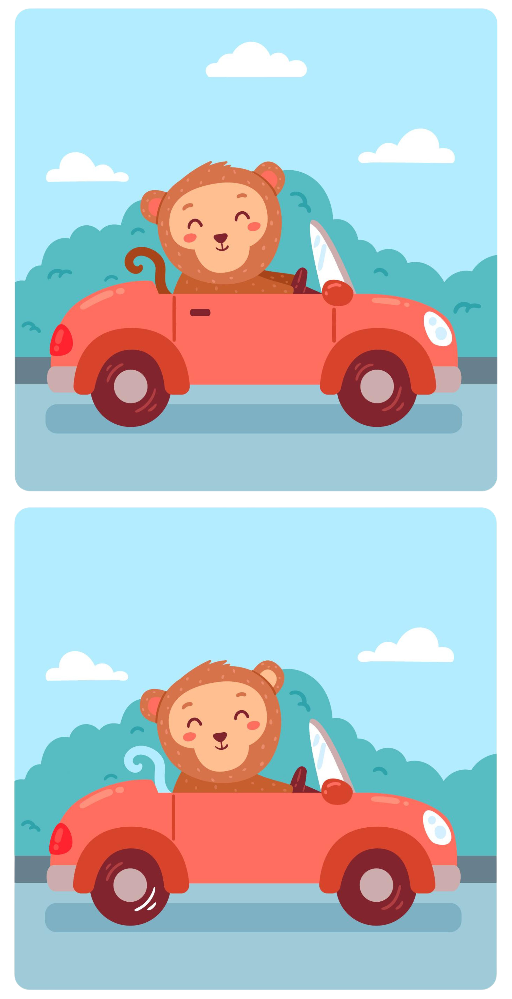

Reminder: "POPUP"
Great job! You have succesfully completed this round!
Click here to continue
Please click the button below to start the official round of this task.
Start
00
:
00
Spot the Differences
Differences Spotted:
0
